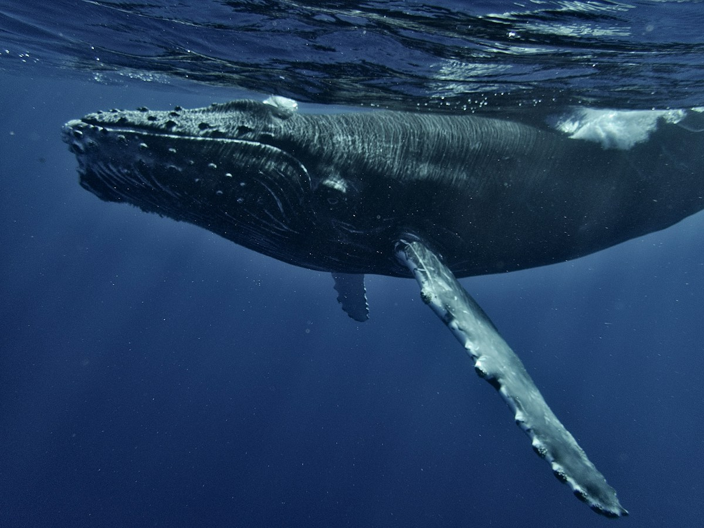
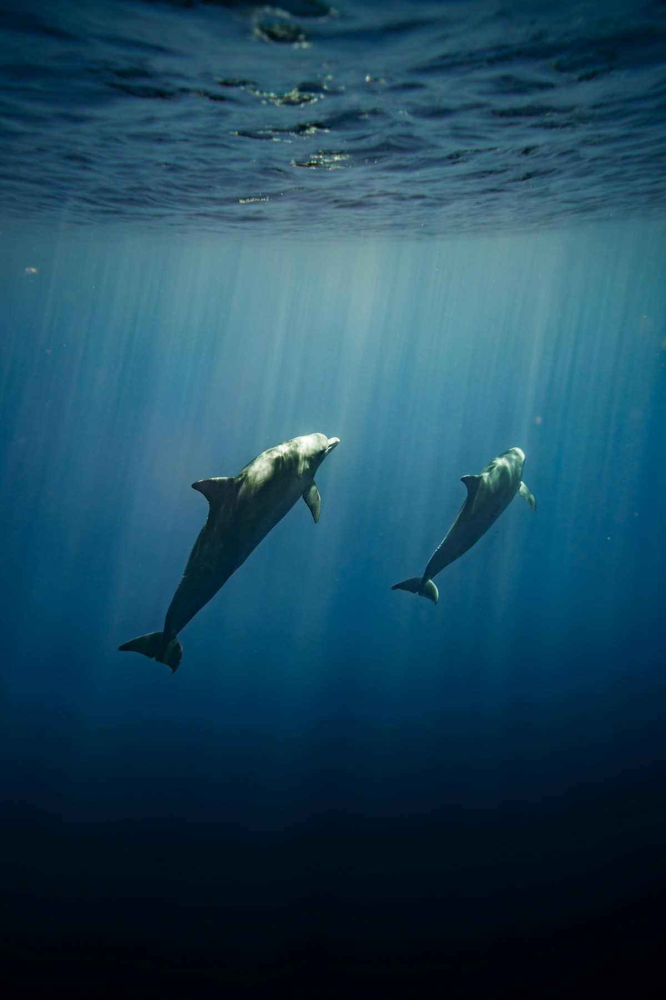
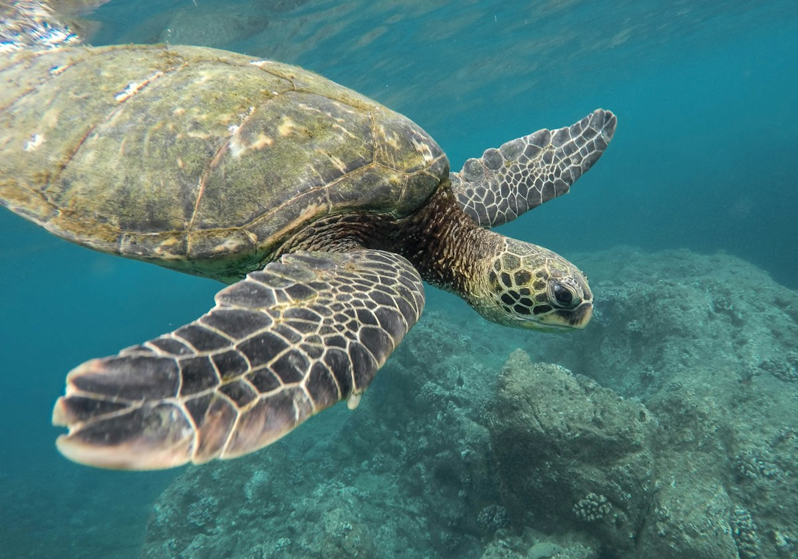
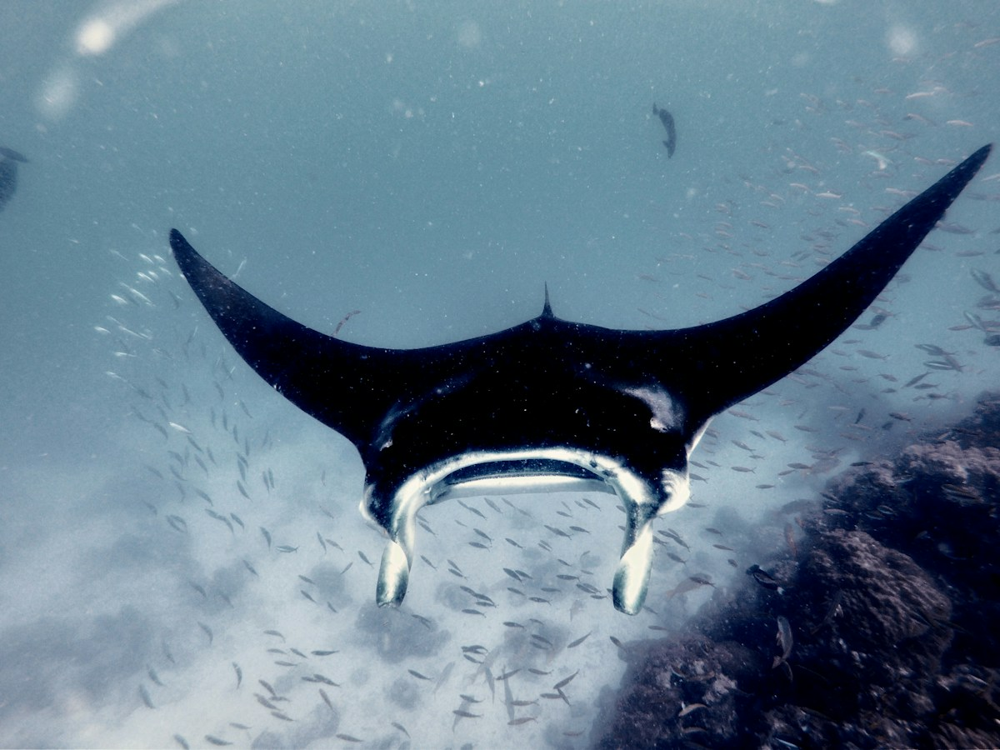
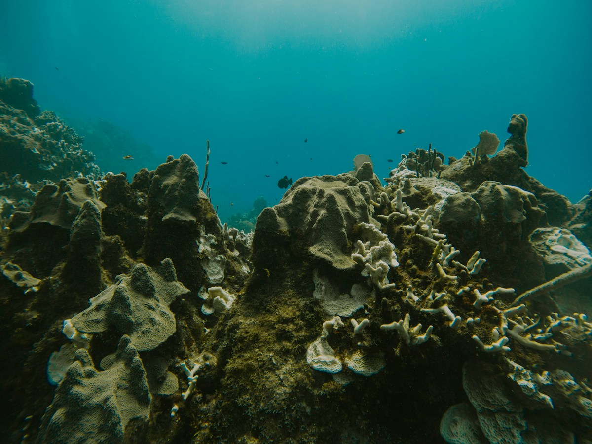
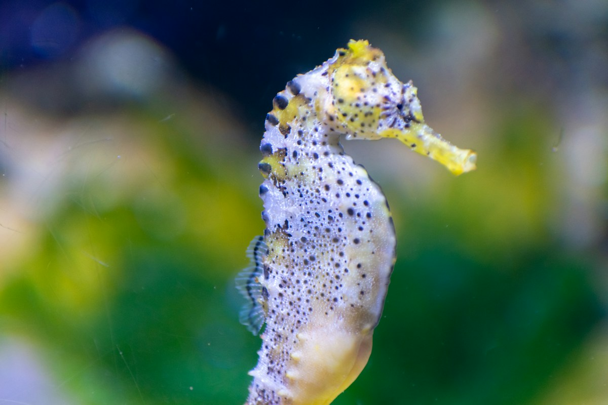

Kiti · Varuhi pradavne pesmi
Kiti prek neizmernih razdalj pošiljajo svoje globoke klice skozi vodo. V tej legendi so njihove pesmi najstarejši spomin oceana — opomin, da zvok lahko potuje tja, kamor pogled ne seže.
ŽIVA LEGENDA · GLAS IZ ZAČETKA
Zgodba o pradavnih vodah, varuhih njenega živega kraljestva in sveti školjki, ki človeški šepet ponese čez morje.
PRED ZAČETKOM
Preden so prvi koraki prečkali kopno, preden je bilo izgovorjeno prvo ime in preden je kdorkoli potegnil črto med enim in drugim obrežjem, je obstajala velika voda.
Neskončna, gibljiva, dihajoča. Včasih nežna kot uspavanka. Včasih mogočna onkraj vseh človeških meril. V sebi je nosila spomin dežja, rek, zvezd in vsega življenja, ki se bo nekega dne dvignilo iz njenih globin.
V tej živi zgodbi jo imenujemo Babica Ocean — ne zato, ker bi morje pripadalo enemu imenu ali eni tradiciji, temveč zato, ker ocean lahko občutimo kot prisotnost pradavne modrosti: dovolj prostrano, da sprejme naša vprašanja, dovolj potrpežljivo, da sprejme naš molk, in vedno v gibanju.
Ne govori tako, kot govorijo ljudje. Njen jezik so plima in tokovi, sol in veter, lesket svetlobe pod gladino ter dolgi ritem valov, ki se vračajo k obali.

Ni tiho.
Le mi smo postali tujci jeziku vode.
VARUHI NJENEGA ŽIVEGA KRALJESTVA
Babica Ocean nikoli ni prazna. Njeno kraljestvo je živa tapiserija, stkana iz bitij, ki jih lahko opazujemo že od daleč, in takšnih, ki so tako majhna, da izginejo v zrnu peska. Vsako življenje ima svoje mesto v velikem gibanju morja.

Kiti prek neizmernih razdalj pošiljajo svoje globoke klice skozi vodo. V tej legendi so njihove pesmi najstarejši spomin oceana — opomin, da zvok lahko potuje tja, kamor pogled ne seže.

Igrivi, radovedni in izjemno uglašeni drug z drugim se delfini premikajo skozi valove kot bliski žive svetlobe. Spominjajo nas, da je povezanost lahko inteligentna, radostna in svobodna.

Po odprtem morju morske želve potujejo z izjemnim občutkom za smer. Njihova dolga potovanja nosijo zgodbo vračanja: nagon, da najdejo kraj, kjer se je začelo življenje.

S širokimi, lahkotnimi krili mante drsijo skozi modrino. So tihe plesalke globin, ki nas učijo umetnosti gibanja s tokom, namesto bojevanja proti njemu.

Koralni grebeni niso kamniti vrtovi, temveč žive skupnosti. Med njihovimi razvejanimi strukturami najde zavetje nešteto oblik življenja. Spominjajo nas, da lahko skozi povezanost zacveti cel svet.

Morski konjički, drobne ribice, raki, morske zvezde, školjke, plankton in morske ptice so vsi del velike mreže življenja. Čudežnost oceana se ne meri po velikosti. Tudi najmanjše življenje soustvarja celoto.

OCEANSKE ŠKOLJKE · KRISTALI MORJA
Školjka je najprej del zgodbe živega bitja. Raste skupaj s svojim ustvarjalcem, plast za plastjo, oblikujejo jo hranila, čas in razmere v morju. Ko bitja ni več, lahko školjka ostane — nežna arhitektura, ki jo za seboj pusti življenje.
Nekatere se spiralno odpirajo navzven. Druge se razprejo kot pahljače. Ene so gladke kot porcelan, druge nosijo grebene, vzorce in barve, v katerih se zdi, da je ujet spomin koralnega grebena.
V jeziku te legende so školjke kristali morja — ne zato, ker bi bile vse mineralni kristali, temveč zato, ker ohranjajo vidno sled življenja, ki je nekoč prebivalo v vodi. Njihove spirale nas vabijo, da se spomnimo rasti, zaščite, doma in poti nenehnega nastajanja.


SVETA ŠKOLJKA · IZVORNI ZVOK STVARJENJA
Preden je jezik dal mislim obliko, je obstajal dih. Obstajalo je nihanje. Obstajal je globoki utrip bivanja — zvok vetra, ki potuje skozi svet, vode, ki se sreča s kamnom, in glasu, ki kliče čez daljavo.
Ko školjka postane sveto glasbilo, njena naravna oblika postane prostor za dih. Vanjo vstopi človeški dih in iz nje se rodi globok, odmeven ton. To ni beseda in ni je treba prevajati. Je vibracija, podarjena odprtemu prostoru.
Tukaj, v poetičnem jeziku AQUA BLINKITA, ta zvok imenujemo Izvorni zvok stvarjenja — ime za občutek, da se lahko skozi en sam dih premakne nekaj pradavninskega in brezbesednega.
CASITA CORNUTA · GLASNICA ŠKOLJKA
Moja Casita Cornuta je 26 centimetrov velika oceanska školjka, preoblikovana v sveto glasbilo. Ko jo prislonim k ustnicam in ji podarim dih, njen ton odpotuje nad karibske vode.
Postala je srce moje oceanske prakse: srečanje diha, školjke, morja in namere. Zvok, ki ponese tisto, česar običajne besede včasih ne zmorejo zaobjeti.
Tvoje ime. Tvoja namera. En dih, ki odpotuje čez vodo.
ŠEPET BABICI OCEAN
Ko mi nekdo zaupa svoje ime in namero, ju ponesem na karibsko obalo Belizeja. Stopim ob vodo z mislijo na to osebo. Njeno namero skrbno nosim v sebi, prislonim školjko k ustnicam in njen glas pošljem proti odprtemu morju.
Školjka postane glasnica. Dih postane šepet. Ime in namera osebe vstopita v resničen, oseben trenutek, ki se zgodi ob oceanu.
Ni ti treba potovati v Belize ali karkoli opraviti samemu oziroma sami. Na izbrani dan Oceanskega portala se na obalo odpravim v tvojem imenu.

KO BABICA OCEAN ODGOVORI S ŠEPETOM
Ko školjka zazveni in šepet odpotuje v odprti prostor, se umirim. Ostajam ob morju. Poslušam gibanje valov, spreminjanje plime in oseke, veter, premore med zvoki — in tisto, kar se tiho premika v meni.
Ne pridem z vnaprej napisanim sporočilom. Ne odločam se vnaprej, kaj naj bi ocean povedal. Srečanju pustim prostor, da se razpre.
Včasih se vtis začne kot občutek. Včasih se izostri podoba, beseda, spomin ali tiho védenje. Včasih je prav gibanje vode tisti trenutek, ki ostane z menoj. Te vtise sprejemam intuitivno in skrbno ter jih oblikujem v osebno sporočilo za človeka, čigar ime in namero sem prinesla s seboj.
Vsako srečanje je drugačno, ker je drugačen vsak človek, vsaka namera in vsak dan portala. Sporočila ne prepisujem iz scenarija in ga ne izbiram iz zbirke vnaprej pripravljenih besed. Nastane po tistem posebnem trenutku ob morju.

Najprej ponesem tvoj šepet oceanu. Nato prisluhnem temu, kar se razkrije. In nazadnje ti prinesem osebno sporočilo.
Vsak šepet si zasluži trenutek,
da je ponesen, sprejet in ohranjen v spominu.
KO SO LJUDJE POZABILI POSLUŠATI
Svoje dneve smo napolnili s hrupom, naglico in neskončnimi besedami. Odgovore iščemo tam, kjer se vse hitro premika, medtem ko nas ocean še vedno uči skozi ritem: plima prihaja, oseka odhaja. Ničesar ne moremo zadržati za vedno. Nič ne miruje za vedno.
Morda zato obala deluje kot prag. Pridemo s tistim, kar je postalo pretežko, preveč zapleteno ali preveč pomembno, da bi ostalo neizrečeno. In za trenutek stojimo pred nečim, kar je večje od naših lastnih misli.
Vabilo Babice Ocean je preprosto: ustavi se. Začuti. Spomni se, da je poslušanje tudi način, kako vstopamo v odnos s svetom.
ZAKAJ KARIBSKO MORJE?
Moj odnos do te prakse je ukoreninjen v kraju, kjer živim: na karibski obali Belizeja. To so vode, h katerim se vračam, obzorje, ki ga poznam, in obala, kjer zazvenim s svojo školjko ter ustvarim vsako osebno srečanje.
Karibskega morja ne predstavljam kot edinega svetega morja ali kot kraja, ki bi bil vrednejši od drugih oceanov. Je preprosto resnično, živo okolje mojega dela. Njegova svetloba, veter, plimovanje in obala so del izkušnje, ki jo lahko osebno ponudim.
S te obale se začne pot šepeta — tudi kadar je človek, ki ga je poslal, na drugi strani sveta.
IN ZDAJ GOVORIM TEBI
Pridi bliže, ljubo bitje.
Ni ti treba poznati popolnih besed. Ni ti treba priti brez strahu, brez vprašanj ali z vsem že razjasnjenim.
Prinesi tisto, kar je zate resnično. Prinesi ime, ki ga nosiš v srcu. Prinesi željo, ki si je komaj upal izreči, spremembo, ki si jo pripravljen sprejeti, in breme, ki si ga pripravljen odložiti.
Ne bom te prosila, da postaneš nekdo drug. Spomnila te bom, da prisluhniš življenju, ki se že premika v tebi.
Opazuj, kako se vračam k obali. Opazuj, kako spuščam tisto, česar ne morem zadržati. Opazuj, kako ustvarjam prostor za to, kar prihaja.
In ko boš pripravljen, naj tvoj šepet odpotuje.
OCEANSKI PORTALI · TRINAJST SREČANJ
Oceanski portali so izbrani dnevi, vsak povezan z določeno energijo Tzolk'ina. Ne gre zgolj za trinajst zaporednih datumov. Vsak portal ima svoje mesto v koledarju, svoj značaj in svoje povabilo.
Izbereš lahko eno srečanje ter na izbrani dan portala prineseš eno ime in eno namero. Lahko pa vstopiš v daljše potovanje skozi vseh trinajst izbranih portalov in vsakemu srečanju dovoliš, da se razpre na svoj dan.
Na vsak izbrani dan se odpravim na obalo, zazvenim z Glasnico školjko, prisluhnem in ustvarim osebno sporočilo. Trinajst srečanj postane trinajst posebnih trenutkov, združenih v eno osebno oceansko potovanje.
ŠEPET S KARIBOV
Tvoje ime. Tvoja namera. Ponesena Babici Ocean s karibske obale Belizeja — in osebno sporočilo, prineseno nazaj k tebi.
RAZIŠČI OCEANSKE PORTALE